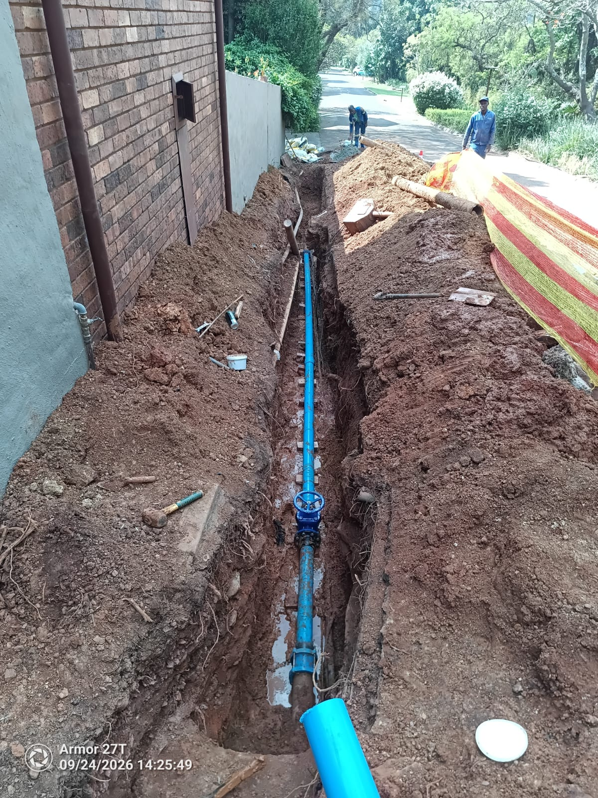
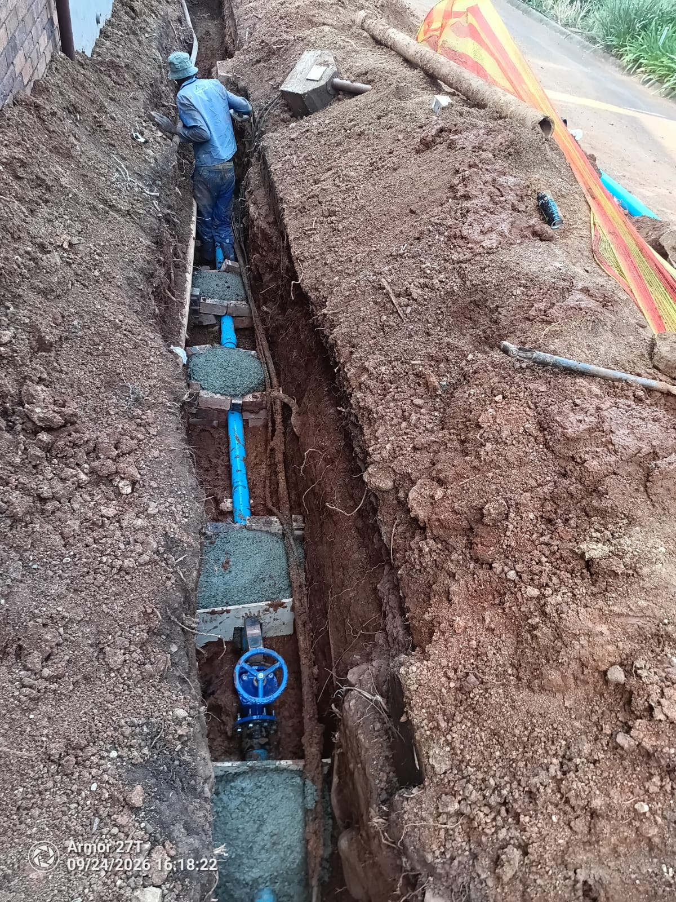
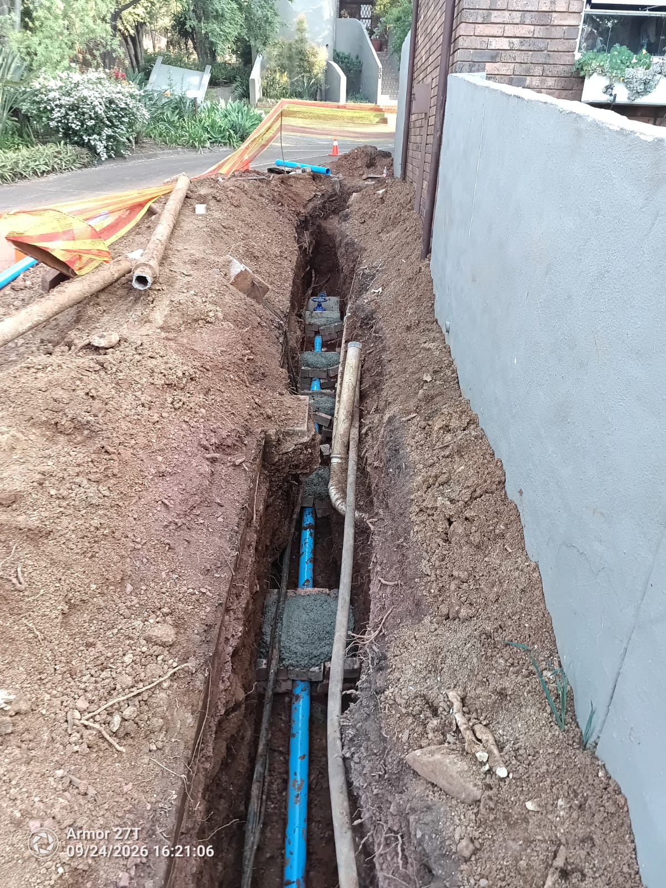
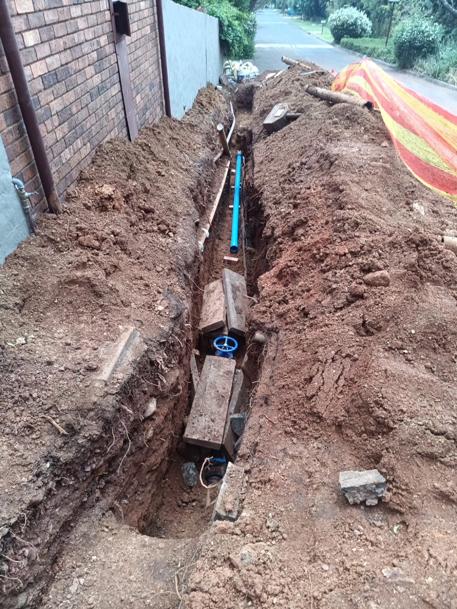
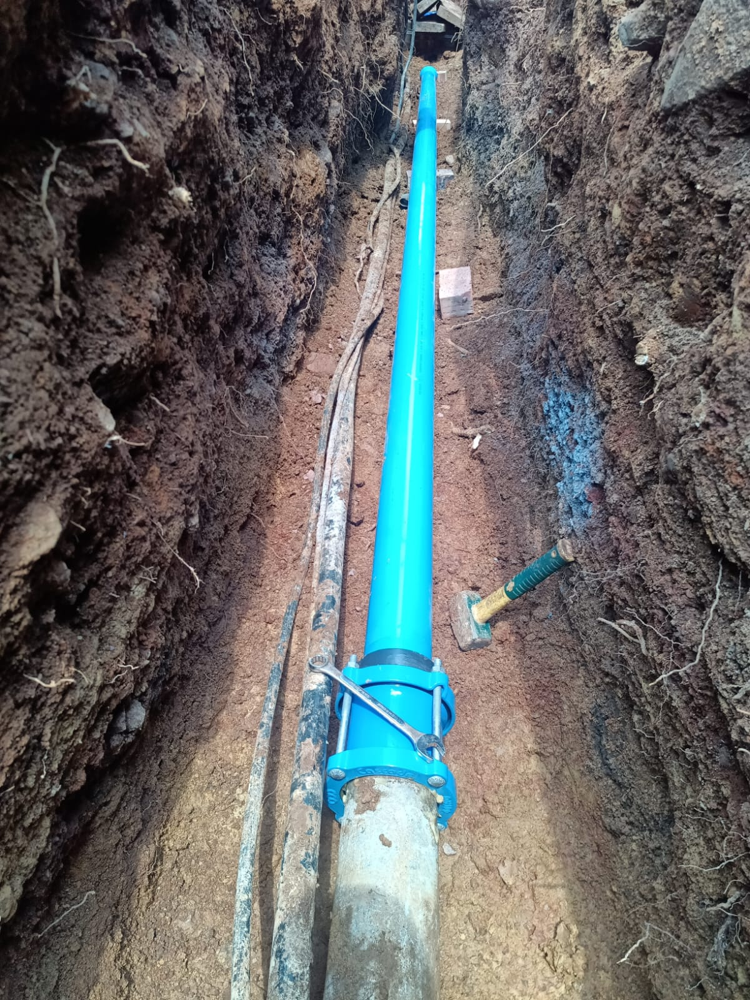
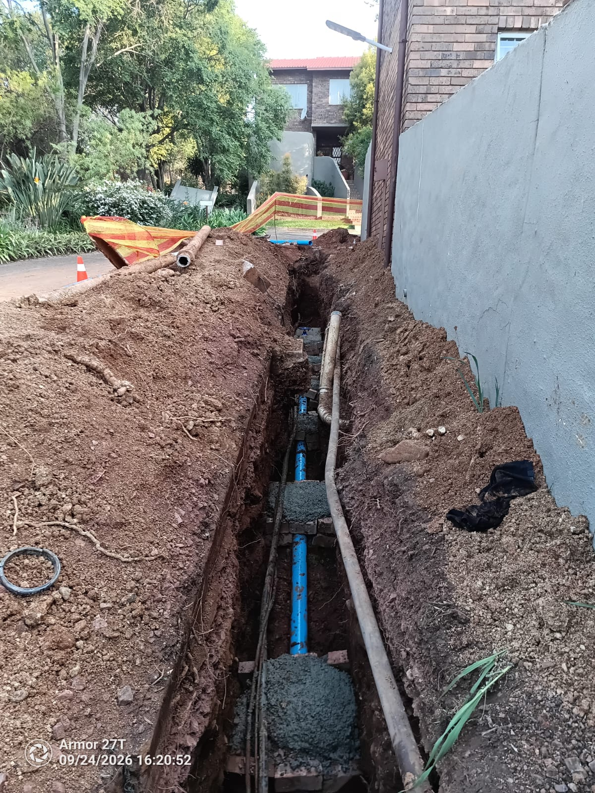

Residents can collect clean borehole water directly from the large green storage tanks situated next to the swimming pool fence.
Click any photo to view full-resolution engineering details:






| Time | Operational Event | Outcome / Decision |
|---|---|---|
| Tue 22 Sep 01:35 |
Burst Detected: Water observed flowing down eastern street roadway. | Main boundary supply valve isolated to prevent catastrophic ground erosion. |
| Tue 22 Sep 14:00-17:00 |
Excavation Progress: Trench excavated to 10m length and 2m depth. | Inspection reveals longitudinal structural pipe collapse requiring complete section replacement. |
| Wed 23 Sep 10:00-16:00 |
Valve Located: Jackhammering exposed southern valve chamber. | Temporary inline isolation valve installed to attempt partial supply to western units. |
| Wed 23 Sep 18:00-22:00 |
Throttled Pressure Test: Throttled water fed through reticulation overnight. | Temporary friction clamp slipped under nocturnal municipal line pressure (6 bar) without concrete anchors. |
| Thu 24 Sep 09:00-16:30 |
Permanent Installation & Casting: Class 16 pipe, couplings, valve, and timber shuttering installed. | All structural concrete anchor blocks fully cast ("Al die nodige is gecast"). Team packed up for overnight cure. |
| Fri 25 Sep 08:00-12:00 |
Phased Testing: Visual joint shear inspection, throttled fill, air purging. | Contractor initiates controlled line pressurization and checks couplings for zero seepage. |
| Fri 25 Sep 17:00 (Target) |
Full Pressure Restoration: Controlled reopening across estate reticulation. | Full system recharge targeted for around 17:00 (5 PM) once concrete exceeds 12 MPa shear threshold. |
A natural question arises: "Why can't we simply clamp the pipe and switch the water back on?" Below is an accessible explanation of the physical forces at work, followed by the rigorous mechanical engineering calculations for technical residents.
From the integral form of the Navier-Stokes momentum conservation equation for a control volume containing a directional deflection or closed boundary:
| Vector Component | Mathematical Formula | Calculated Load | Physical Mechanism |
|---|---|---|---|
| Axial Thrust (Dead End / Gate) | F_axial = P • A | 2.651 kN (270.3 kgf) | Tension load attempting to extract spigot from mechanical coupling. |
| Resultant Bend Thrust (90°) | F_bend = √2 • P • A | 3.749 kN (382.3 kgf) | Transverse shear pushing fitting into embankment soil matrix. |
| Coulomb Friction Capacity | F_friction = μ • N_clamping | ≤ 1.500 kN | Smooth PVC-U to ductile iron friction coefficient (μ ≈ 0.25). |
| Factor of Safety (No Concrete) | FoS = F_resisting / F_thrust | 0.40 << 1.0 (Failure) | Rigorous proof that unanchored mechanical clamp must slip. |
Compressive and shear capacity evolution follows the exothermic dissolution-precipitation reaction of alite (tricalcium silicate):
| Curing Horizon | Hydration Ratio | Compressive f_cu | Allowable Shear τ | Structural State |
|---|---|---|---|---|
| 6 to 12 Hours (Green) | ∼15% | 3.0 to 4.5 MPa | < 0.35 MPa | Plastic deformation; shear failure under 3.75 kN thrust. |
| 24 to 36 Hours (Fri 17:00) | >50% | 12.5 to 15.0 MPa | > 1.35 MPa | Safe for testing: FoS ≥ 2.2 against thrust block detachment. |
| 7 Days | ∼75% | 18.0 to 20.0 MPa | > 1.80 MPa | Full design service load capacity achieved. |
| 28 Days | 100% | ≥ 25.0 MPa | ≥ 2.40 MPa | Complete crystalline C-S-H matrix maturation. |
Acoustic wave speed (c) in an elastic conduit with fluid-structure interaction:
Mitigation Strategy: Controlled 45-minute gradual recharge using downstream boundary wash-out hydrants to bleed entrapped air at low velocity (Δv < 0.2 m/s), maintaining transient surge below 0.7 bar.
If you need assistance carrying water containers from the green tanks, or know of an elderly or frail resident requiring physical support, please message management directly:
💬 Message Sanglen Management on WhatsApp